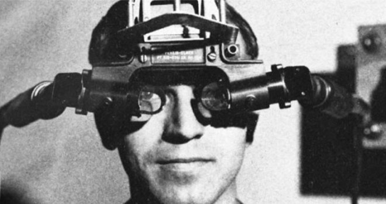
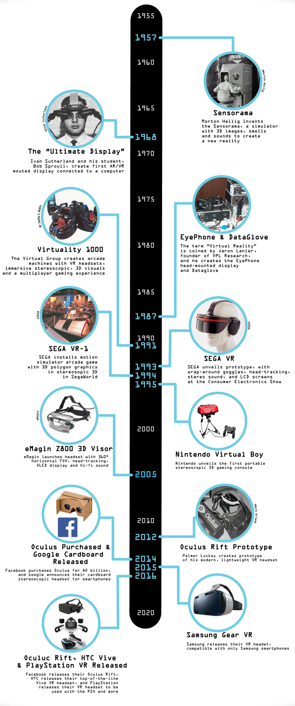

ZGODOVINAKoncept virtualne resničnosti sega v 60. in 70. leta, ko so raziskovalci in izumitelji začeli raziskovati možnosti ustvarjanja vznemirljivih digitalnih izkušenj. |  |
|---|
|  | V 90. letih so se zgodile pomembne izboljšave VR tehnologije, ko so se številna podjetja in raziskovalci posvečali njenemu potencialu.
Leta 1991 je SEGA predstavila VR headset Sega VR za arkadne igre, ki je vključeval sledenje glave in stereoskopsko 3D vizualizacijo. Kljub tehničnim omejitvam in skrbi glede gibalne slabosti je bil projekt na koncu preklican. Sodobna doba potrošniške VR se je začela leta 2010, ko je Palmer Luckey razvil prototip Oculus Rift. Oculus Rift je pridobil veliko pozornosti na platformi Kickstarter leta 2012, kar je privedlo do prevzema s strani Facebooka leta 2014. Komercialna izdaja Oculus Rifta leta 2016 je predstavljala prelomnico za VR, ki je vzbudila široko zanimanje in oživila industrijo. Po uspehu Oculus Rifta so v VR trg vstopile tudi druge velike tehnološke družbe. HTC je leta 2016 v sodelovanju z Valve Corporation izdal HTC Vive, ki je ponujal VR izkušnje v prostoru in natančno sledenje s pomočjo zunanjih baznih postaj. Sony je istega leta predstavil PlayStation VR, izkoristil pa je obstoječi ekosistem konzole PlayStation. V zadnjih letih se je tehnologija VR headsetov hitro razvijala. Izboljšave v ločljivosti zaslona, frekvenci osveževanja in vidnem polju so privedle do izboljšanih vizualnih izkušenj. Poleg tega so napredki v sledilnih sistemih, kot sta notranje sledenje in sledenje rok, omogočili večjo dostopnost in poglobitev VR izkušenj. |
|---|